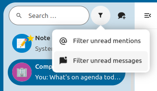
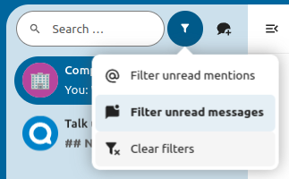
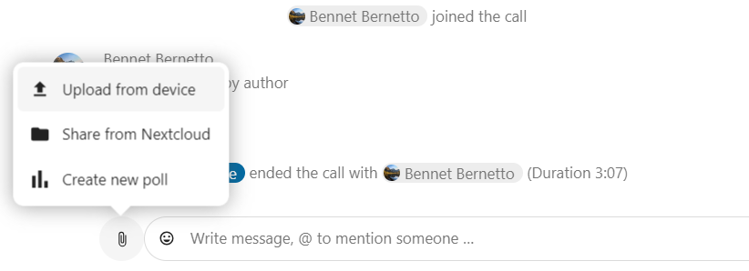

أسَاسِيَّات "المُحادثة" Talk في نكست كلاود
تمكنك نكست كلاود من إجراء دردشات و مكالمات صوتية و مرئية على خادومك.
الدردشات chats و المكالمات calls تجري ضمن "المحادثات" conversations. يمكنك إنشاء أي عدد من المحادثات. هنالك نوعان من المحادثات:
محادثة فردية One-on-one conversations حيث تُجرِي محادثة خاصة أو مكالمة مع مستخدم Talk آخر. لا يمكنك إضافة أشخاص آخرين إلى هذه المحادثة أو مشاركتها برابط. تبدأ المحادثة مباشرة بين شخصين من خلال البحث عن اسم المستخدم الآخر المراد الاتصال به في شريط البحث ثم النقر فوق اسمه.
محادثة جماعية Group conversations بالإضافة إلى الشخص الذي أنشأ المحادثة، يمكن أن تضم المحادثة أيّ عددٍ من الأشخاص الآخرين. يمكن مشاركة محادثة جماعية بشكل عام باستخدام رابط؛ بحيث يمكن للمستخدمين الضيوف الخارجيين الانضمام إلى مكالمة. كما يمكن أيضًا للأشخاص الآخرين على خادوم نكست كلاود خاصّتك الانضمام إلى المحادثة.
إنشاءُ مُحادَثةٍ
يمكنك إنشاء دردشة مباشرة بين شخصين من خلال البحث عن اسم المستخدم أو المجموعة أو الدائرة و النقر عليه. بالنسبة لمستخدم واحد، يتم إنشاء المحادثة و البدء في الدردشة معه على الفور. أمّا بالنسبة إلى مجموعة أو دائرة، يمكنك اختيار اسم و إعدادات المحادثة قبل إنشائها و إضافة مشاركين فيها.

If you want to create a custom group conversation, click the button next to the search field and filters button and then on Create a new conversation.

يمكنك بعد ذلك اختيار اسم للمحادثة، و وضع وصف لها، و إعداد تجسيد رمزي avatar لها (مع صورة أو رمز إيموجي ermoji يتم تحميله)، و تحديد ما إذا كانت المحادثة يجب أن تكون مفتوحة للمستخدمين الخارجيين و ما إذا كان المستخدمون الآخرون على الخادوم يمكنهم رؤية المحادثة و الانضمام إليها.

في الخطوة الثانية، يتوجب عليك إضافة مُشاركين و إكمال المحادثة.

يمكنك إلغاء إنشاء محادثة بالنقر خارج منطقة القائمة البيضاء في أي وقت.

أعرُض كل المحادثات المفتوحة
You can view all the conversations that you can join by clicking the button next to the search field and filters button and then on Join open conversations.
{kind=link}
قُم بفلترة محادثاتك
يمكنك فلترة محادثاتك باستخدام زر الفلترة الموجود بجوار حقل البحث. يوجد خياران للفلترة: 1. فلترة الإشارات غير المقروءة: يتيح لك هذا الخيار عرض محادثات المجموعة مع الإشارات غير المقروءة أو المحادثات الفردية غير المقروءة. 2. فلترة الرسائل غير المقروءة: يتيح لك هذا الخيار عرض جميع الرسائل غير المقروءة في جميع المحادثات التي انضَمَمْتَ إليها.
{kind=link}
يمكنك حينها إزالة الفلتر من قائمة الفلاتر.
{kind=link}
مُشاركة الملفات داخل دردشة
يمكنك مشاركة ملفات داخل الدردشىة بـ 3 طرق.
الأولى، يمكنك ببساطة سحب و إفلات الملف في مساحة الدردشة.

الثانية، يمكن تحديد الملف من تطبيق الملفات Files في نكست كلاود أو من مدير الملفات file manager بالنقر على علامة "مشبك الورق paperclip" و تحديد من أين ترغب في التقاط الملف.
{kind=link}

You can add more files until you are done and decide to share the files. You can also add a text caption to your shared files, providing a brief description or context.

سيتمكن جميع المستخدمين من النقر فوق الملفات لعرضها أو تحريرها أو تنزيلها بغض النظر عن امتلاكهم حساب مستخدم أم لا. ستتم مشاركة الملف تلقائيًا مع المستخدمين الذين لديهم حساب بينما سيشارك الضيوف الخارجيون الملف في شكل رابط عام.

إدخال إيموجي emoji
يُمكنك إضافة إيموجي باستخدام اللاقط بجوار حقل الإدخال النّصّي.

Using Markdown
You can enhance your messages with a markdown syntax support. See list for usage:
Headings and dividers
# Heading 1
## Heading 2
### Heading 3
#### Heading 4
##### Heading 5
###### Heading 6
Heading
===
Normal text
***
Normal text
Inline decorations
**bold text** __bold text__
*italicized text* _italicized text_
`inline code` ``inline code``
```
.code-block {
display: pre;
}
```
Lists
1. Ordered list
2. Ordered list
* Unordered list
- Unordered list
+ Unordered list
Quotes
> blockquote
second line of blockquote
Setting reminder on messages
You can set reminders on specific messages. If there's an important message you want to be notified about later, simply hover over it and click on the reminder icon.

In the submenu, you can select an appropriate time to receive a notification later.

الرّدّ على الرسائل و غير ذلك
يمكنك الرد على رسالة باستخدام السهم الذي يظهر عندما تُحوِّم بالفارة فوق رسالة.

في قائمة ...، يمكنك أيضًا اختيار الرّدّ على الخاص privately. سيؤدي هذا إلى فتح دردشة فردية.

يمكنك هنا أيضًا إنشاء رابط مباشر للرسالة أو تمييزها كـ"غير مقروءة" حتى تتمكن من العودة إليها في المرة التالية التي تدخل فيها الدردشة. و إذا كانت الرسالة في شكل ملف، فيمكنك عرض الملف في تطبيق الملفات Files.
إدارة محادثة
في المحادثات الجديدة التي تنشؤها تكون أنت دائمًا منسق المحادثة moderator بشكل تلقائي.و يمكنك ترقية مشاركين آخرين ليكونوا منسقين و ذلك باختيارهم من قائمة المشاركين؛ و ذلك بالضغط على ... الموجودة بجوار اسم المستخدم المقصود. كما يمكنك تعيين أذونات مخصصة لأيّ منهم أو إزالته من المحادثة.
سيؤدي تغيير أذونات المستخدم الذي انضم إلى محادثة عامة إلى إضافته بشكل دائم إلى المحادثة.

يمكن للمنسقين تهيئة المحادثة. حدِّد إعدادات المحادثة Conversation settings``من قائمة ``... الخاصة بالمحادثة في الأعلى للوصول إلى الإعدادات.

هنا يمكنك كتابة وصف المحادثة، و التصريح للضيوف ، و تحديد هل ستكون المحادثة مرئية للآخرين على الخادوم أم لا، و المزيد.

Messages expiration
A moderator can configure message expiration under the Conversation settings within the Moderation section. Once a message reaches its expiration time, it is automatically removed from the conversation.
The available expiration durations are 1 hour, 8 hours, 1 day, 1 week, 4 weeks, or never (which is the default setting).

بَدْءُ مُكالَمَةٍ ...
عندما تكون في محادثة، يمكنك بدء مكالمة في أي وقت باستخدام زر بدء الاتصال Start call. سيتم إشعار المشاركين الآخرين حيث يمكنهم الانضمام إلى المكالمة.
{kind=link}
إذا كان شخص آخر كان قد بدأ المكالمة سلفاً، سيتغير لون زر "إنضَمّ للمكالمة Join call" إلى اللون الأخضر.

أثناء المكالمة، يمكنك كتم صوت لاقط الصوت microphone أو تعطيل كاميرتك باستخدام الأزرار الموجودة على الشريط العلوي، أو باستخدام الاختصارات M لكتم الصوت و V لتعطيل الكاميرا. يمكنك أيضًا استخدام مسطرة المسافة لتبديل كتم الصوت. عندما يتم كتم صوتك، سيؤدي ضغطك على مسطرة المسافة إلى إعادة صوتك مجدّدداً و ستتمكن من التحدث طالما ظللت ضاغطاً على مسطرة المسافة حتى تتركها. إذا تمّ إلغاء كتم صوتك، فسيؤدي ضغطك على مسطرة المسافة إلى كتم صوتك حتى تتركها.
يمكنك إخفاء فيديو كاميرتك (مفيد أثناء مشاركة الشاشة) باستخدام السهم الصغير أعلى تدفق الفيديو مباشرة. أعده بالسهم الصغير مرة أخرى.
يمكنك الوصول إلى الإعدادات الخاصة بك و اختيار كاميرا ويب و لاقط صوت مختلفين و إعدادات أخرى في القائمة ... في الشريط العلوي.

From media settings dialog, you can also change the background of your video.

يمكنك تغيير الإعدادات الأخرى في مربع حوار إعدادات المحادثة Talk settings.

بدء مشاركة الشاشة
You can click the monitor icon on your video stream to share your screen. Depending on your browser, you will get the option to share a monitor, an application window or a single browser tab. If video from your camera is also available, other participants will see it in a small presenter view next to the screen share.

تغيير العرض في مكالمة
يمكنك تبديل العرض في مكالمة بالنقر على الأيقونة الصغيرة في شكل أربع كتل في الأعلى بين العرض التمييزي promoted-view و العرض الصناديقي grid view. في العرض الصناديقي سيظهر كل الأشخاص بنفس الحجم؛ كلُّ واحدٍ في صندوقٍ. و إذا لم حجم الشاشة كافياً لعرض جميع الأشخاص، فستظهر أزرار على اليسار واليمين تتيح لك التنقل بينهم.

تُظهر طريقة العرض التمييزي promoted-view الشخص المتحدث بحجم كبير و الآخرين في صفِّ في الأسفل. و إذا لم يكن حجم الشاشة كافياً لعرض جميع الأشخاص، فستظهر أزرار على اليسار واليمين تتيح لك التنقل بينهم.